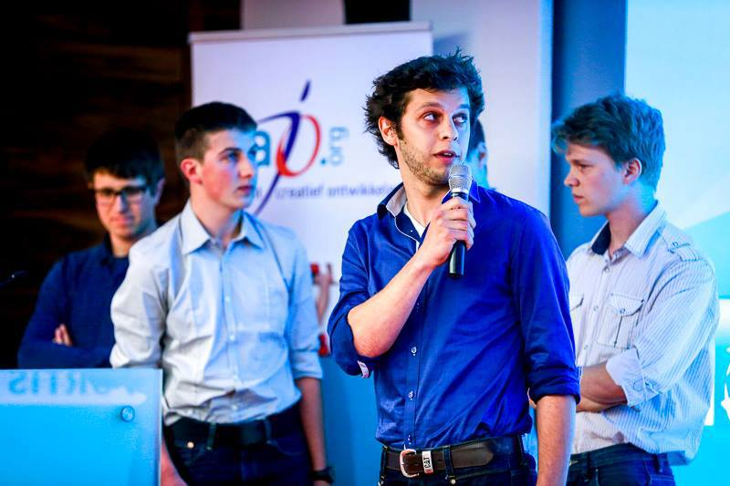
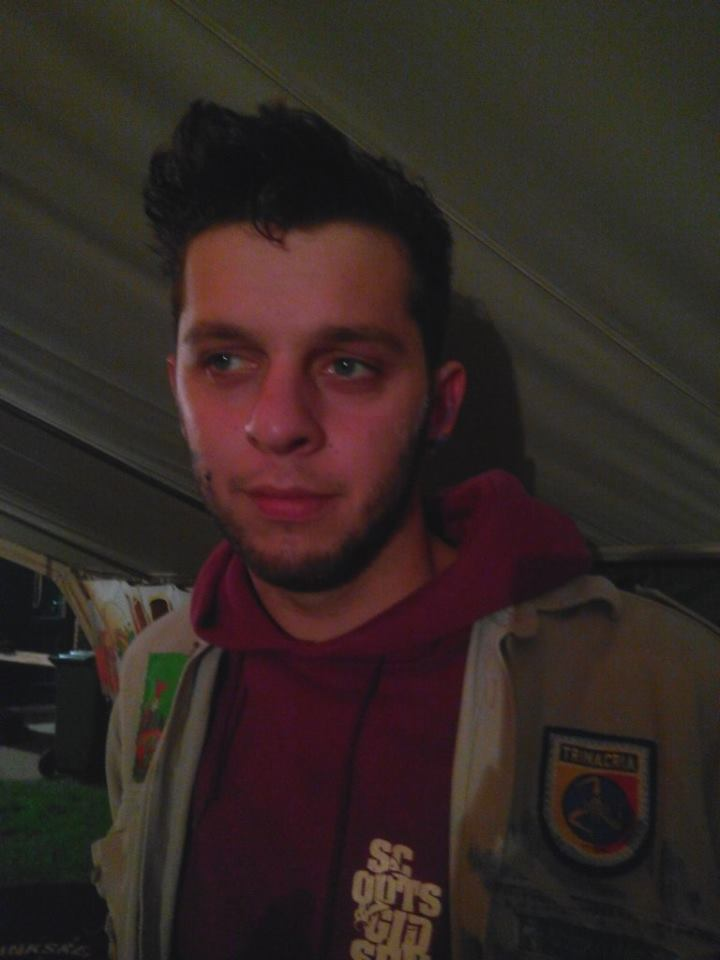

Over mezelf
Ik ben Vanbrabant Nick en ben geboren te Sint-Truiden.
Studies
Mijn studies ben ik begonnen aan "Onze Lieve Vrouw Tuinbouwschool" in Sint-Truiden. Zonder problemen ben ik hier afgestudeerd heb ik besloten om verder te gaan studeren in de Biotechnologie Sector. Hierdoor ben ik in 2007 begonnen met de studie 'Agro- en biotechnologie' In de PHL (Provinciale Hogeschool Limburg), nu bekend als de PXL. (Link PXL). In 2011 ben ik hier afgestudeerd met de specialistatie "Milieutechnologie" en met het attest "Milieucoordinator B". Hierna heb ik in de zomervakantie enkele weken werkervaring opgedaan als student en heb ik besloten om nog verder te gaan studeren. Omdat ik alle vele jaren bij de scouts zit en regelematig een event organiseerde heb ik besloten om "Officemanagement" met als afstudeer richting "Event- en Projectmanagement" te gaan studeren (Link KHL). Op deze manier leer ik bij hoe ik het organiseren van een evenement kan optimaliseren en leer ik hoe ik moet omgaan met projectgroepen. Hierdoor ben ook een persoon die initiatief neemt en ondernemend is, bezig is met onderzoek en innovatie en duurzaam kan ondernemen. Tijdens deze opleidingen heb ik een grote kennis verworven van het hele MS Office pakket, heb ik kennis en ervaring met Photoshop en Illustrator en ben ik zeer ervaren met multimediasoftware. Tenslotte heb ik leren communiceren in het Nederlands, Engels en Frans. Omdat beide opleidingen zeer praktisch ingesteld zijn weet ik ook van aanpakken, kan ik sociaal en assertief optreden. Deze vaardigheden heb ik in de praktijk al vaak moeten toepassen, 5 jaar lang ben ik groepsleider geweest bij de scouts in onze gemeente. Hierdoor heb ik geleerd wat teambuilding is, hoe ik moet omgaan met groepen en individuele personen. Bijkomend ben ik bezig met het organiseren van kleine tot middelgrote evenementen. Tenslotte wil ik nog even vermelden dat ik beschik over een rijbewijs B. Ik kan verblijven in Vlaams-Brabant als in Limburg, verplaatsing is voor mij dus geen probleem.Scouts
19 jaar scouts
7 jaar leider
4 jaar groepsleider
- Evenementen organiseren
- Vergaderen
- Organiseren
- Budgeteren
- Omgaan met groepen
- Leiding geven
- Contact met ouders (klanten)
- Sociale vaardigheden
- Verkoopacties organiseren
- Kamp voorbereiden
- Buitelandskamp voorbereiding
- Etc..
Evenementen
Omdat ik bij de scout verschillende kleine evenementen moest organiseren zoals een Winterbarbecue, een brugeliaanse avond, een spaghettiavond, een jaarlijkse fuif, etc.. werd ik zeer geintereseerd in deze sector. Hierdoor ben ik dan ook nog andere evenementen beginnen te organiseren zoals Terbeats en een jaarlijks Nieuwjaar evenement.Terbeats
Terbeats is een jaarlijkse fuif tijdens het 1ste weekend van de paasvakantie. Wij verwelkomen hier jaarlijks zo'n 1000 fuifgangers en nodigen Dj's uit zoals De mixfitz en DJ Tonic.Nieuwjaarsevenement
Jaarlijks organiseer ik en enkele kameraden ook een Nieuwjaarevent waar zo'n 100-150 personen op aanwezig zijn. Hier wordt gebruik gemaakt van een All-in formule en worden enkele Dj's uit omstreken gevraagd
.Foto's
 Terug naar hoofdpagina